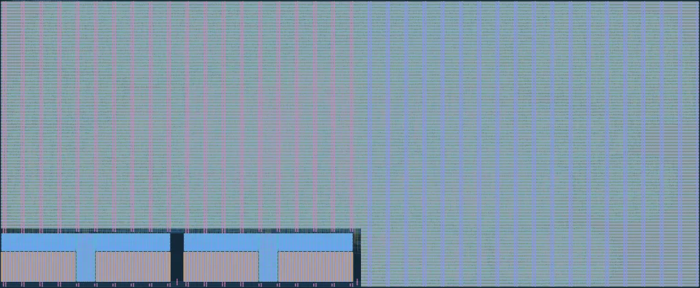
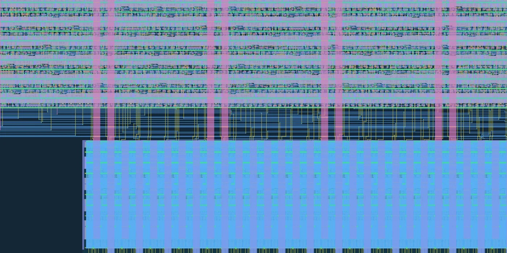
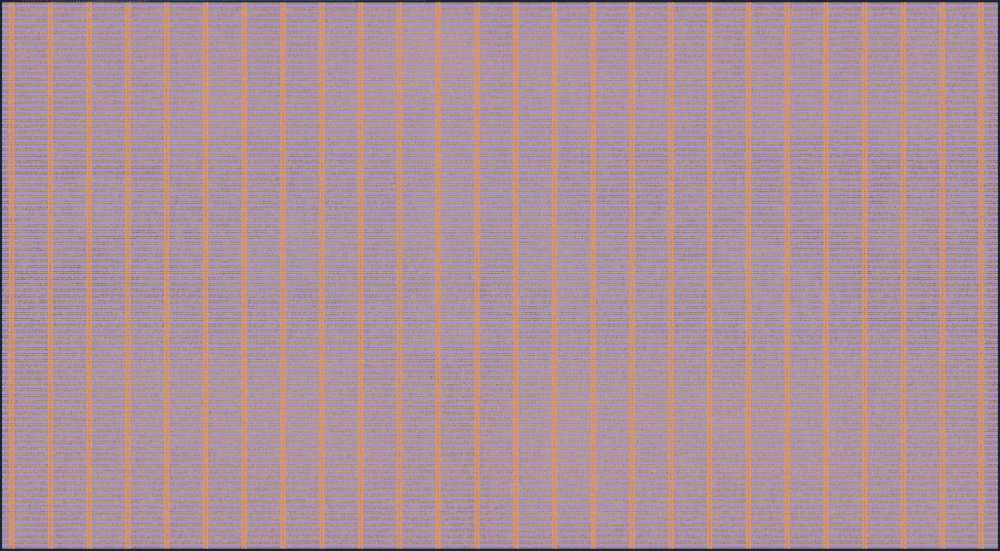
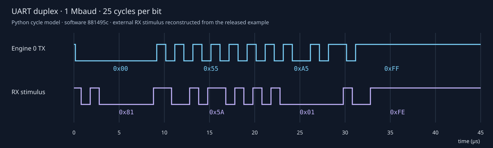
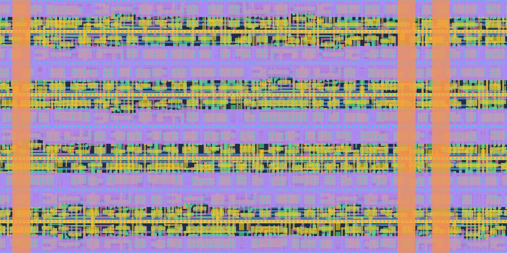

Serial data
UART & SPI
8N1 UART transmit and receive, plus SPI controller and target programs for modes 0–3. Edge deadlines set the waveform timing; host queues carry the bytes.
UART firmware →SPI firmware →
Independent hardware project · V2 → V3
Design, implementation, and verification of a dual-engine ASIC for programmable digital interfaces.
The ASIC generates and records protocol traffic using two programmable engines, deadline-driven pins, and timestamped capture. This case study documents the V2 and V3 designs, their verification results, and FPGA operation. The Verilog and Python implementation was developed for Jane Street’s Protocol Emulator ASIC Competition.
V3 · 48 MHz · SRAM program memory · running on Artix-7
V2 established two independent engines, receive queues, and triggered capture. V3 moves program storage into SRAM and gives each pin its own deadline, so firmware can compute the next action while the hardware keeps time.
| Design feature | V2 | V3 |
|---|---|---|
| System clock | 25 MHz | 48 MHz |
| Program storage per engine | 64 × 24 bits in flip-flops | 256 × 32 bits in SRAM |
| Output timing | Instruction delays | Deadlines applied by pin cells |
| Timekeeping | Engine delays and capture timestamp | Shared 24-bit timebase |
| Die allocation | 6 × 4 tiles | 8 × 4 tiles |
48 MHz · SRAM programs · Artix-7 FPGA
The two SRAM macros sit side by side along the bottom edge, with their signal pins facing the logic above. Zoom into the routing or isolate a layer to follow the physical design.

Toggle layers or use Solo to inspect an individual GDS layer/datatype pair.
Drag to pan · double-click or pinch to zoom · Ctrl/⌘ + scroll to zoom · arrow keys to pan · F to fit. Ordinary scrolling moves the page.
The viewer uses image tiles for the die overview and original polygon coordinates for detailed inspection. The GDS download includes the complete layout and text labels.
Each engine advances a private time cursor and schedules output values and enables. The pin cells apply those changes on the shared clock, keeping edge timing consistent across branches and concurrent programs.
Registered SRAM fetch and prefetch support one instruction per cycle in straight-line code. A shared CRC/LFSR handles programmable bit sequences, and timestamped inputs let firmware respond to external edges.
Python generators produce assembly programs for the same engines and pin cells. The assembler, SPI loader, and cycle model share the instruction definitions.
Serial data
8N1 UART transmit and receive, plus SPI controller and target programs for modes 0–3. Edge deadlines set the waveform timing; host queues carry the bytes.
UART firmware →Shared buses
Controller and target programs at 100 and 400 kHz, with open-drain output, clock stretching, arbitration detection, and nine-pulse bus-clear recovery.
I²C firmware →Pulse-width data
The same hardware generates addressable-LED data by scheduling different high and low intervals. A self-contained program sends three RGB pixels and their latch interval.
WS2812 firmware →Cycle-model comparisons check pin transitions, induction proofs check block and integration properties, and routed-netlist tests exercise the host interface, program execution, queues, and capture.
Model & RTL
cocotb differential suites, protocol peers for UART, SPI, I²C and WS2812, and Yosys induction proofs cover the programmable core.
Routed netlist
Host loading and readback, atomic start, transmit and receive queues, CRC arbitration, input filtering, capture, and status readback.
Physical checks
The selected V3 layout passes CMOS5L DRC, pin, boundary, layer, cell-name, and layout checks.

| Process / allocation | IHP 130 nm CMOS5L / 8 × 4 tiles |
|---|---|
| Clock period | 20.833 ns · 48 MHz |
| Standard-cell / SRAM area | 660,587 / 98,977 µm² |
| Core utilization | 62.87% |
| Slow-corner register setup margin | +2.578 ns |
| Fast-corner hold margin | +0.112 ns |
Ran V3 at 48 MHz on a Digilent Cmod A7-35T, loaded and executed programs through the host bridge, and captured a 25 kHz output in Vivado ILA.
Board integration
A 12 MHz board oscillator feeds the 48 MHz core clock. FPGA block RAM holds the two programs, and a USB-UART bridge carries host commands to the SPI interface.
Program execution
The host writes the program image, reads it back, configures pin ownership, and starts the engine. The programmed output runs on the board.
Vivado ILA
The capture shows 960 core-clock samples per half-cycle: 20 µs at 48 MHz. Five probes expose inputs, outputs, output enables, core status, and serial-link status.
Architecture, firmware, verification, and the selected physical layout.
25 MHz · protocol queues · triggered capture
The layout viewer supports full-die inspection, routing detail, and individual layer selection.

Toggle layers or use Solo to inspect an individual GDS layer/datatype pair.
Drag to pan · double-click or pinch to zoom · Ctrl/⌘ + scroll to zoom · arrow keys to pan · F to fit. Ordinary scrolling moves the page.
The viewer uses image tiles for the die overview and original polygon coordinates for detailed inspection. The GDS download includes the complete layout and text labels.
Protocols are firmware running on a common timing engine. V2 extends that foundation to receiving data, coordinating two engines, and recording what happened at the interface.
UART transmit and receive, all four SPI modes, and I²C at 100 or 400 kHz. SPI and I²C examples cover both controller and target roles.
Each engine has 16-byte TX and 16-record RX queues. A separate 32-record capture unit records synchronized pin activity, including glitches rejected by the engine input filter.
Python assembly and loading tools, a cycle model, independent protocol observers, and retained test evidence connect intended behavior to implementation.
Eight protocol I/O pins connect the programmable engines to the device under test. Capture observes the interface independently.
A bounded 1 Mbaud UART duplex example: one engine transmits four bytes while the other receives a different four-byte sequence. Each bit spans 25 system clocks.

The V2 release includes protocol tests, routed-netlist simulation, and extracted timing analysis across fast, typical, and slow corners.
Software & RTL · 881495c
Complete V1/V2 functional gate, both tops’ lint and synthesis, five induction proofs, six mutation checks, and 14 executable protocol examples.
Selected netlist · 447b3df
Functional cell-model simulations passed the protocol pin scenarios and supplemental reset and state-loss checks on the selected routed netlist.
Physical implementation
The selected local checkpoint recovery passed the required physical checks, independent mapping and full-geometry checks.

| Process / allocation | IHP 130 nm CMOS5L / 6 × 4 tiles |
|---|---|
| Clock / transition / uncertainty | 40 ns / 1.5 ns / 0.25 ns |
| Standard-cell area | 793,932 µm² |
| Core utilization | 87.98% |
| Minimum setup / hold slack | +18.456291 ns / +0.054473 ns |
| Slew / fanout / capacitance violations | 0 at every required corner |
The V2 layout completed validation through a local Tiny Tapeout checkpoint recovery at physical revision 447b3df. Its elaborated RTL and prepared settings match software revision 881495c.
Extracted timing analysis passes at all three corners. The table reports the lowest setup and hold margins across those corners.
The V2 Python APIs configure the engines, load programs, and read results. The host services queues through a 1 MHz SPI interface; the 1 Mbaud duplex examples preload their transmit bursts. Reset, configure, and reload to initialize program and capture storage.
V1 established programmable transmission and completed electrical closure. V2 adds independent execution, receive paths, and capture within the same 6 × 4 tile allocation.
| Capability | V1.0.0 | V2 |
|---|---|---|
| Timing engines | 1 | 2 independent engines |
| Program storage | 64 × 24 bits | 64 × 24 bits per engine |
| TX / RX buffering | 4 TX bytes / no RX queue | 16 TX bytes / 16 RX records per engine |
| Protocol examples | UART transmit | UART TX/RX, SPI modes 0–3, I²C |
| Triggered capture | None | 32 timestamped records |
| Clock / allocation | 25 MHz / 6 × 4 tiles | 25 MHz / 6 × 4 tiles |
Historical baseline: completed V1.0.0 release. Both versions target 25 MHz. V2 adds a second engine, receive queues, and triggered capture.
V2 milestone published 18 October 2026. Python package and runtime version: 2.0.0rc1.
Website artifact checksums · Viewer adapted from the project’s static renderer at 856a1ea · Apache-2.0 license